01 · 측정
느리면 추측하지 않고 먼저 잽니다
- 측정
- 원인 확인
- 수정
- 다시 측정
Backend & DevOps Engineer
유희준입니다. 옥타코에서 여러 고객사가 함께 쓰는 SSO 인증 서비스를 처음부터 만들었습니다. 부트캠프에서는 판매가 열리면 5,000명이 몰리는 사전예약 서비스의 AWS 인프라와 접수 서버를 맡았습니다. 느린 곳은 재서 고치고, 장애와 실패는 운영과 같은 조건으로 직접 재현해 확인합니다.
$ whoami
name 유희준
role Backend · DevOps
career 1년 7개월 # 정규직 11개월, 인턴 8개월
focus 인증 · 정합성 · 장애 격리 · IaC
$ ls certs/
CKA AWS-SAA 정보처리기사 SQLD
$ cat principles.txt
느리면 먼저 잰다
운영과 같은 조건으로 재현한다
실패하면 무엇이 남는지 본다
결정한 이유를 문서로 남긴다▌01
2025.04 – 2026.02정규직 11개월
2024.08 – 2025.03인턴 8개월
2026.04 – 2026.10
2019.03 – 2025.02
02
일할 때 지키는 네 가지 습관입니다. 사례를 누르면 해당 프로젝트 설명으로 이동합니다.
01 · 측정
02 · 재현
03 · 실패
04 · 기록
03
항목을 펼치면 찾은 문제와 해결 과정, 결과가 차례로 나옵니다. 그림은 누르면 크게 보입니다.
실무 · 2025.07 – 2025.12 · 신규 SSO 구축 TF 백엔드 3명
고객사 여러 곳이 함께 쓰는 SSO 인증 서비스입니다. 회사 계정 하나로 Notion, Slack 같은 업무 앱에 모두 로그인합니다.
담당
로그인 화면과 OIDC, SAML 처리는 팀원 담당

백엔드

| 방식 | 장점 | 감수할 점 |
|---|---|---|
| 모든 테이블에 고객사 id 컬럼 | DB 하나로 가장 저렴 | 쿼리에 고객사 조건이 하나라도 빠지면 다른 고객사 데이터 노출 |
| 고객사별 DB | 격리가 가장 확실 | 고객사 수만큼 DB 비용과 운영 부담 증가 |
| 고객사별 DB Schema (선택) | DB 하나 안에서 커넥션 단계에서 격리 | 고객사를 추가할 때마다 Schema 생성, 테이블 변경은 모든 Schema에 적용 |
설계만 한 부분: 고객사마다 Namespace를 만들고 같은 서비스를 띄워 서브도메인별로 각 Namespace로 라우팅하는 구조로 부하와 메모리까지 격리하도록 설계. Kubernetes 단계는 설계까지 마치고 AWS 리소스 자동화를 먼저 구현


기술 블로그: Redis Cache Stampede 대응 ↗ · Redis Cache Penetration 대응 ↗

| 장애 유형 | Redis 복제 | Circuit Breaker + DB Fallback |
|---|---|---|
| Redis 노드 장애 | 복제본으로 넘어가 버팀 | DB로 우회 |
| 서버와 Redis 사이 지연 | 그대로 멈춤 | 느린 호출로 집계해 DB로 우회 |
| 서버와 Redis 사이 연결 끊김 | 그대로 멈춤 | 실패한 호출로 집계해 DB로 우회 |
LIKE '%검색어%'와 여러 컬럼 OR 조건 때문에 테이블 전체를 읽고 있었음| 항목 | 이전 | 이후 |
|---|---|---|
| 쿼리 평균 실행 시간 | 987ms | 20ms |
| 검색 API p99 | 1초 이상 | 200ms 이내 |
| 실행 계획 | 테이블 전체 읽기 | 인덱스 사용 |
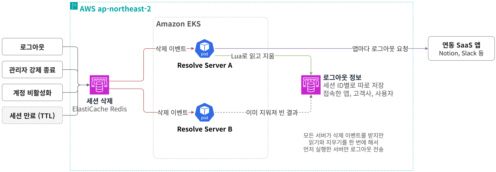
인프라


팀 프로젝트 · 2026.09 – 2026.10 · LG U+ 유레카 부트캠프 7인 팀 (백엔드 5명, 프론트엔드 2명)
판매가 열리면 10초 안에 5,000명이 몰리는 사전예약 서비스입니다. 사용자는 대기열에서 차례를 기다렸다가 예약을 접수합니다. 접수한 예약은 외부 예약 시스템에도 등록해야 하는데, 이 시스템은 요청이 몰리면 느려집니다. 서비스 10개는 ECS Fargate에서 돌고 외부 예약 시스템 등록은 SQS를 거쳐 worker가 처리합니다.
담당
판매가 열린 순간, 예약 요청 하나가 지나가는 길
1/8 판매가 열리면 10초에 5,000명이 한꺼번에 몰립니다.
2/8 CloudFront와 WAF가 경로별 요청 한도로 과한 요청을 먼저 걸러 냅니다.
3/8 Valkey 순번으로 줄을 세우고 접수 서버가 감당할 만큼만 들여보냅니다. 자세히 보기 →
4/8 예약과 Outbox를 한 트랜잭션으로 저장하고 사용자에게 바로 응답합니다. 사용자가 기다리는 구간은 여기서 끝납니다. 자세히 보기 →
5/8 커밋 뒤 등록 작업을 SQS에 발행합니다. 발행에 실패해도 Outbox 행이 남아 주기 작업이 다시 발행합니다. 자세히 보기 →
6/8 worker가 외부 응답 속도에 맞춰 동시 요청 수를 스스로 조절합니다. 큐가 쌓이면 worker 대수가 늘어납니다. 자세히 보기 →
7/8 예약 id를 멱등 키로 붙여 등록합니다. 결과를 모르면 같은 키로 먼저 조회해 없을 때만 다시 보냅니다. 자세히 보기 →
8/8 다시 보내도 안 되는 작업은 DLQ로 옮기고 Slack으로 알립니다. 외부가 멈춰도 접수는 그대로 처리됩니다. 자세히 보기 →
백엔드
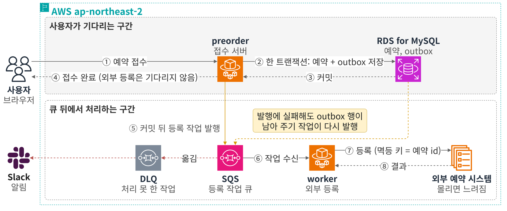
| 검토한 안 | 장점 | 단점 |
|---|---|---|
| 외부 시스템 동기 호출 | 구현이 단순 | 외부가 느려지면 접수도 함께 느려짐 |
| DB 저장 뒤 SQS 직접 발행 | 구현이 단순 | 커밋과 발행 사이에 죽으면 메시지 유실 |
| Outbox + SQS (선택) | 발행하지 못한 행도 DB에 남아 재발행 | 중복 발행이 생길 수 있어 받는 쪽 멱등 처리 필요 |
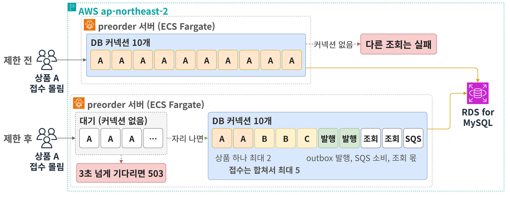
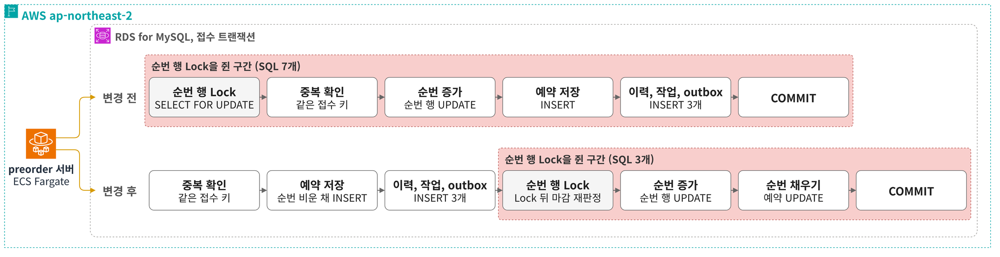
| 접수 응답 | 변경 전 | 변경 후 (4회 평균) |
|---|---|---|
| p50 | 521ms | 48ms (91% 단축) |
| p95 | 4.81초 | 1.72초 (64% 단축) |
| 0.5초 안에 끝난 비율 | 49.8% | 92.8% (43%p 증가) |
| 서버 오류 (5xx) | 0.82% | 0.05% (94% 감소) |
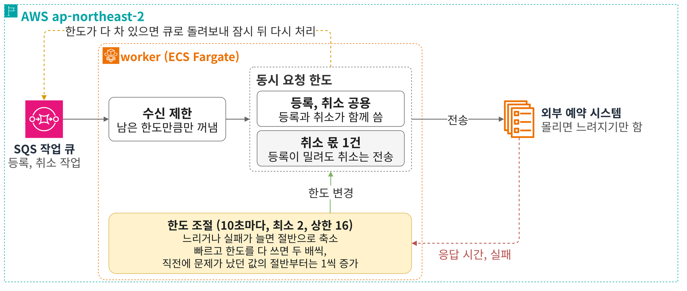
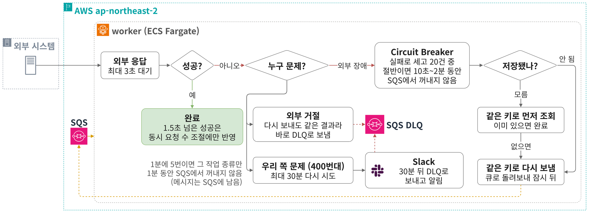
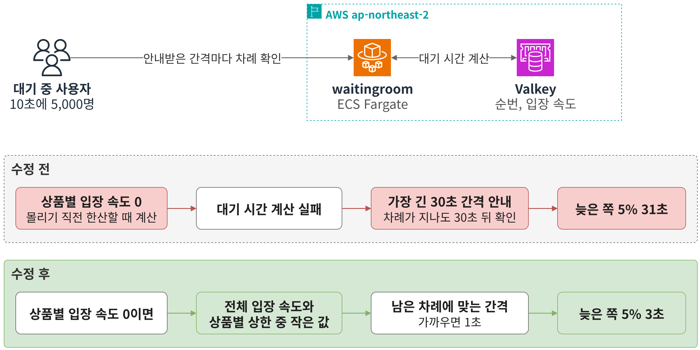
인프라
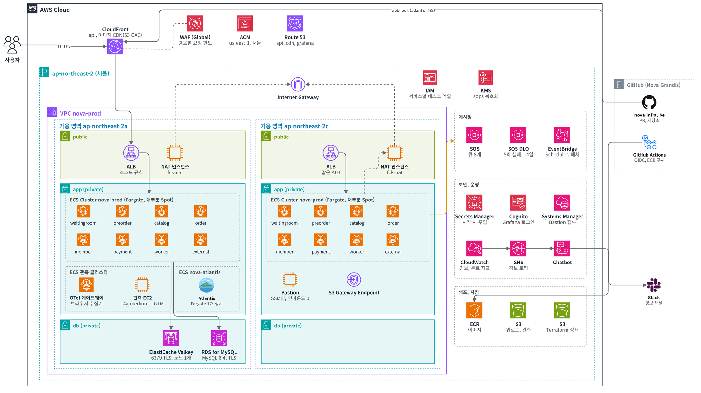
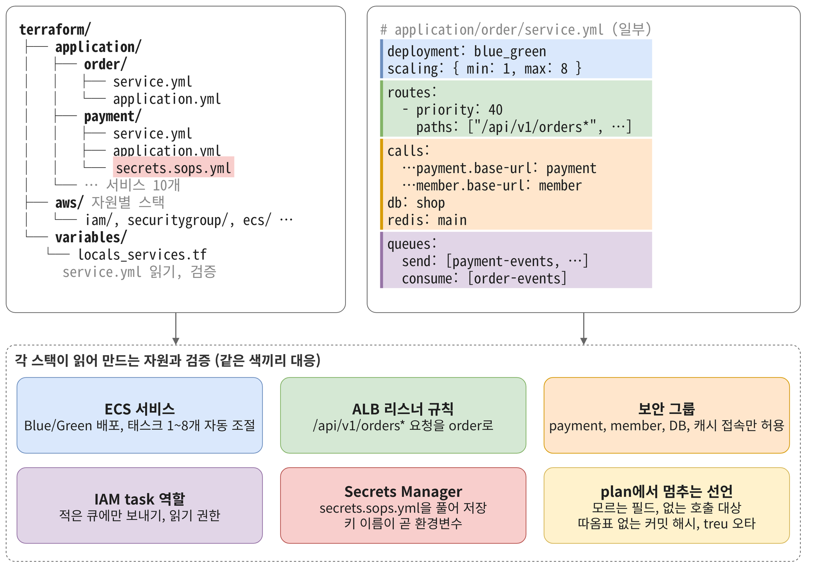
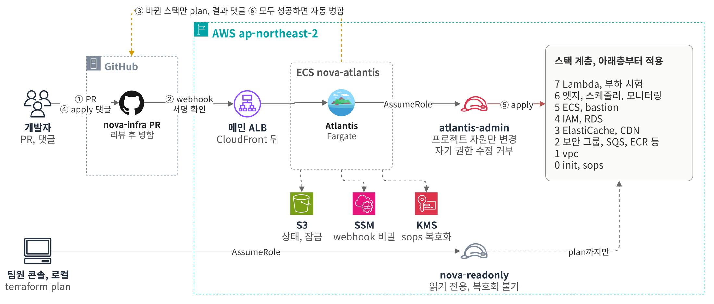
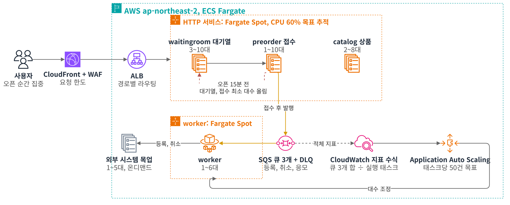
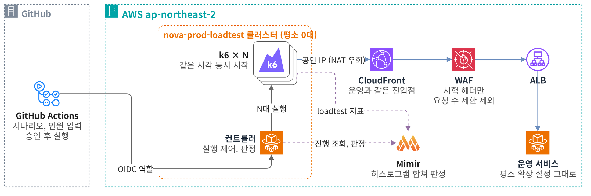
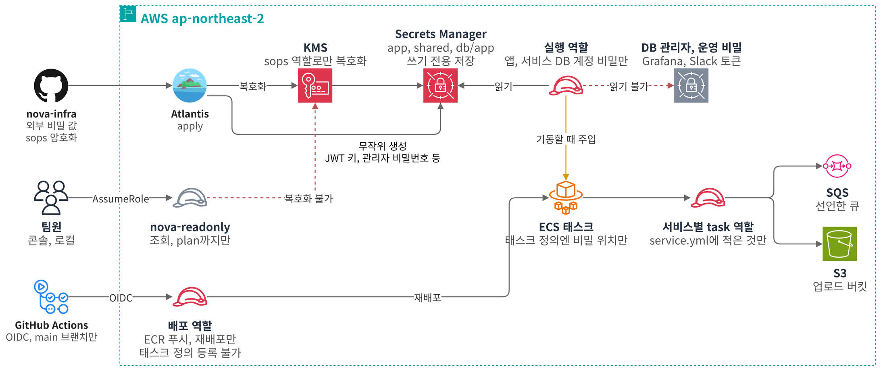
| 항목 | 목표 구조 | 지금 운영 | 월 절감 (서울 리전 정가 기준 추정) |
|---|---|---|---|
| Fargate 용량 | 서비스마다 온디맨드 1개 | 전부 Spot (외부 시스템 목업만 온디맨드) | 약 160달러 |
| VPC 엔드포인트 | ECR, Logs, Secrets Manager, SSM | 끔 (NAT 경유) | 약 130달러 |
| DB | RDS Multi-AZ | RDS 단일 AZ | 약 120달러 |
| Container Insights | 켬 | 끔 (무료 지표와 이벤트 경보) | 약 75달러 |
| NAT | NAT Gateway | NAT 인스턴스 (t4g.micro) | 약 70달러 |
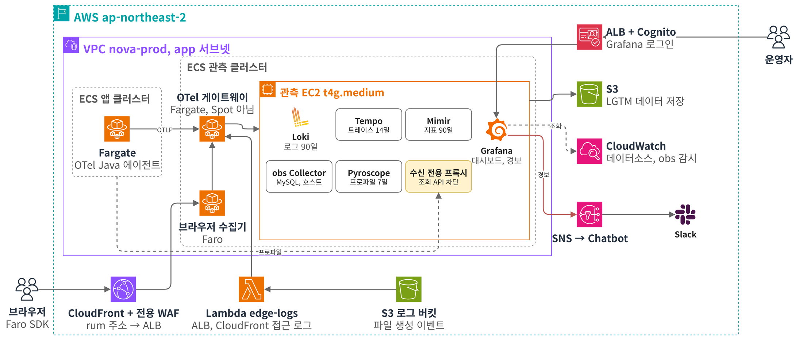
04
부트캠프 프로젝트 사전예약 서비스 NOVA에서 Claude Code로 개발하며 쓴 방식입니다. AI가 쓴 코드는 사람이 정한 범위와 테스트를 통과해야 반영됩니다.
애플리케이션
AI가 바꾼 코드는 목표 테스트와 회귀 테스트를 통과하고 리뷰를 거친 것만 병합
인프라
AI가 잘못 쓴 코드는 로컬 확인과 PR 리뷰에서 걸러지고, 운영 AWS는 Atlantis를 거쳐야만 변경
05
회사 업무와 팀 프로젝트 밖에서 더 알고 싶었던 주제를 혼자 만들고 운영해 봤습니다.
인증 보안
Svalinn · 멀티테넌트 SSO와 권한 관리 서버 · 2026.07 – 08 · 1인
옥타코에서 설계에 참여한 SSO를 혼자 처음부터 다시 만들며, 하위 관리자에게 관리 권한을 맡기는 구조와 외부 로그인 연동에서 계정이 뚫리는 경로를 찾아 막는 데 집중했습니다. 설계와 결함 기준, 검증 방법은 제가 정했고 Claude Code가 구현한 코드는 실제 DB 테스트와 위조 응답 테스트로 직접 검증했습니다.
홈랩 Kubernetes
홈랩 Kubernetes 플랫폼 · kubeadm 2노드 베어메탈 · 2026.05 – 06 · 1인
집에 있는 베어메탈 서버 두 대에 kubeadm으로 클러스터를 직접 설치하고 개인 프로젝트를 올려 운영합니다. Cilium과 Argo CD만 처음 한 번 설치하고, 나머지는 GitLab 저장소 하나를 Argo CD App of Apps로 동기화합니다. 그 뒤 사람이 하는 일은 Vault unseal뿐입니다.
06
실무나 프로젝트에서 직접 설계하고 운영해 본 것만 적었습니다.
 Java
Java
 Spring Boot
Spring Security
Spring Boot
Spring Security
 JPA/Hibernate
Flyway
Resilience4j
JPA/Hibernate
Flyway
Resilience4j
PostgreSQL
 Redis
Redis
 Kafka
MySQL
Valkey
Kafka
MySQL
Valkey
OIDC SAML 2.0 SCIM 2.0 Spring Authorization Server SpiceDB
VPC
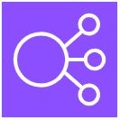 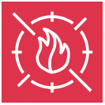 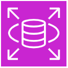 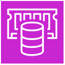 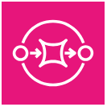
 Kubernetes
Kubernetes
 Docker
Helm
containerd
Docker
Helm
containerd
 GitHub Actions
GitHub Actions
 GitLab CI
GitLab CI
 Argo CD
Argo CD
 Terraform
Terraform
 Trivy
Atlantis
Trivy
Atlantis
Vault
 Cloudflare Tunnel
External Secrets
SOPS
IRSA
NetworkPolicy
cosign
Cloudflare Tunnel
External Secrets
SOPS
IRSA
NetworkPolicy
cosign
 Grafana
Grafana
 Prometheus
OpenTelemetry
Tempo
Pyroscope
Loki
Mimir
Prometheus
OpenTelemetry
Tempo
Pyroscope
Loki
Mimir
k6
JUnit 5
 Testcontainers
Testcontainers
 Claude Code
Chaos Monkey
Floci
Claude Code
Chaos Monkey
Floci